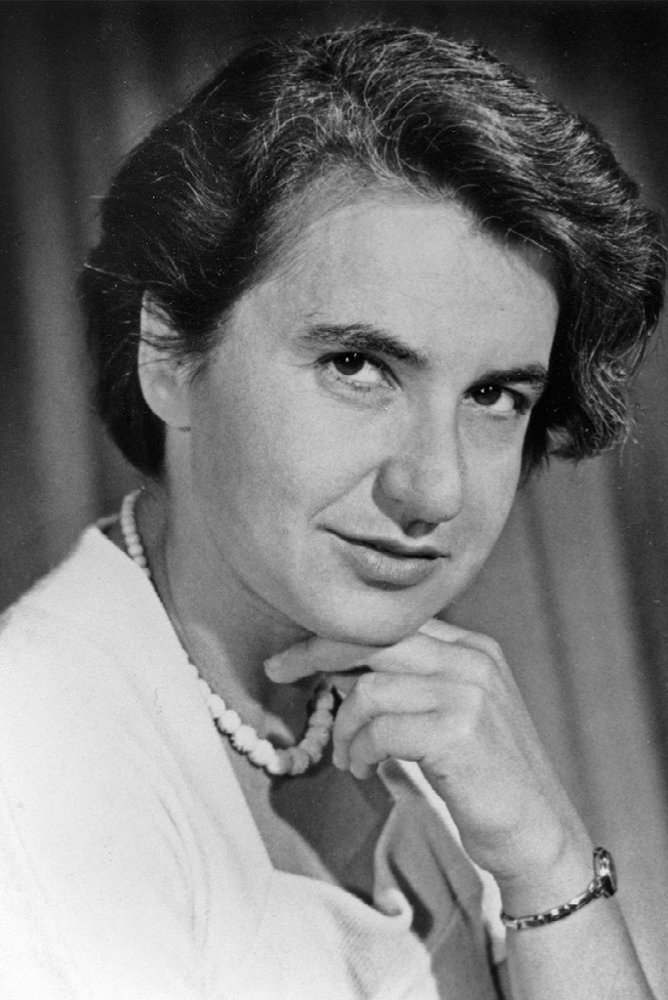

(Londres, 25 de julio de 1920 - 16 de abril de 1958)

Fue “la olvidada científica detrás del descubrimiento de la estructura del ADN”.
Rosalind Elsie Franklin nació el 25 de julio de 1920 en Londres. En 1941, se graduó en Química y Física y de inmediato, consigue una beca para iniciar su tesis doctoral. En 1942 en plena Guerra Mundial, pasa a la Asociación para la Utilización del Carbón y con sus investigaciones ayuda al esfuerzo de guerra. Hizo un trabajo importante en sus estudios sobre el carbón lo que le permitió, 1946, defender su tesis doctoral.
Fue una científica francesa refugiada en Inglaterra durante la guerra, Adrienne Weill, la que orientó su trabajo postdoctoral y, en 1947, la animó a ir a Francia, al Laboratorio Central de Servicios Químicos del Estado, en París. Allí aprendió la técnica de difracción de Rayos X en la que se convertiría en una experta a nivel mundial y aplicaría, pocos años más tarde, a la molécula del ADN. Tras unos años en París, en 1951, vuelve a su casa en Inglaterra, y consigue una plaza en el King’s College de Londres (caracterizado por un panorama machista de la ciencia inglesa).
En su estancia en el King’s College, Rosalind Franklin mejoró el aparato para obtener imágenes del ADN, junto a su estudiante de doctorado Raymond Gosling, un becario designado a colaborar con su estudio; cambió el método y obtuvo fotografías donde con una nitidez que nadie había conseguido antes.
En noviembre de 1951 dio una charla para exponer sus resultados a sus colegas del King’s College. Entre el público estaban James Watson y Francis Crick, dos investigadores también interesados por la estructura del ADN, quienes trabajaban en el Laboratorio Cavendish, en Cambridge. Fue Maurice Wilkins, amigo de Watson y Crick, quien les había invitado a la ponencia realizada por Rosalind. Meses después, Wilkins fue quien les enseñó imágenes de ADN tomadas por Rosalind Franklin, rara vez con su permiso y la mayor parte de las veces sin que ella lo supiera.
En febrero de 1953, vieron tres imágenes y, entre ellas, la famosa fotografía número 51. Para entonces, Watson y Crick llevaban más de un año sin conseguir nada positivo. La famosa fotografía 51 la habían conseguido Franklin y Gosling en mayo de 1952.
Más tarde en 1953, ya cansada del ambiente del King’s College, se trasladó al laboratorio dirigido por John Bernal, en Birkbeck College, también en Londres. Allí siguió su carrera de investigadora con importantes trabajos sobre virus, concretamente sobre el del mosaico del tabaco y el de la polio, que todavía son citados por expertos.
Rosalind Franklin falleció en Londres el 16 de abril de 1958, a los 37 años, de cáncer de ovario.
Cuatro años más tarde, en 1962, Watson, Crick y Wilkins recibieron el Premio Nobel en medicina por sus estudios sobre la estructura del ADN. Ni Watson ni Crick mencionaron a Rosalind Franklin en sus discursos de aceptación. Wilkins hizo una muy breve mención a la “muy valiosa” contribución de Rosalind Franklin.